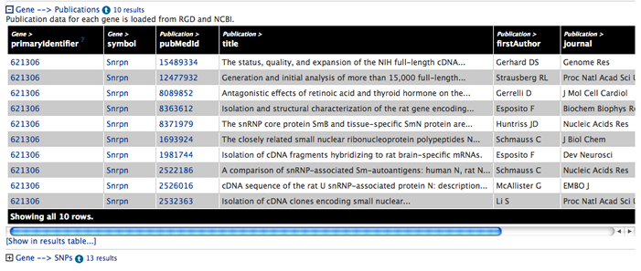

A quick search box appears in the menu bar of all pages. You can search for any identifier or symbol for genes, proteins, transcripts and so on. You can use '*' as a wildcard.
Run a quick search for the R. norvegicus gene Snrpn:
The report page shows information from many data sources in one place. There are corresponding pages for all objects in RatMine, use ![[details...]](details.png) links to browse.
links to browse.
![[object details summary]](report_top.png)
Template queries are run for this gene when the page is loaded.
